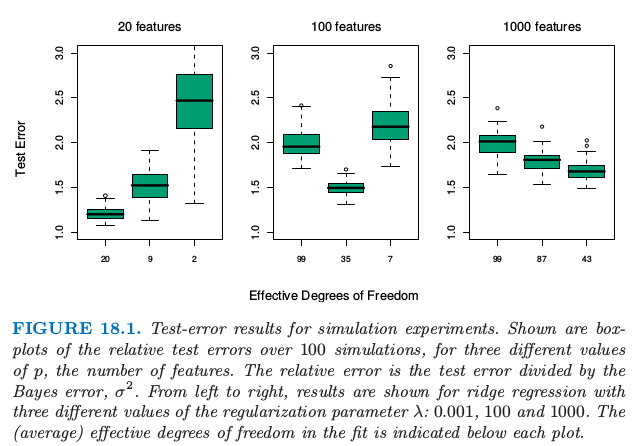

当p远大于N
| 原文 | The Elements of Statistical Learning |
|---|---|
| 翻译 | szcf-weiya |
| 时间 | 2017-03-14:2017-03-14 |
这章中我们讨论特征的个数$p$远大于观测的数目$N$的预测问题，通常写成$p>>N$。这样的问题变得越来越重要，特别是在基因和其他计算生物的领域中。我们将会看到这种情形下，高方差和过拟合是主要的考虑。结果是，简单、高正则化的方式经常成为方法的选择。本章的第一部分集中在分类和回归的设定中，而第二部分讨论特征选择和评估的更基本的问题。
首先，图18.1总结了一个小的模拟研究，表明当$p>>N$时，“少量拟合更好”的原则。对于$N=100$样本中的每一个，我们产生成对协方差为0.2的$p$个标准的高斯特征$X$。输出$Y$根据线性模型产生 其中$\varepsilon$由标准高斯分布产生。对于每个数据集，系数$\beta_j$也从标准高斯分布中产生。我们研究三种情形：$p=20,100,1000$。在每种情形下标准误差的选取$\sigma$都使得信噪比$Var[E(Y\mid X)]/Var(\epsilon)$等于2。结果是，单变量回归系数显著的个数分别为9，33和331，这是在100次模拟中平均得到的。$p=1000$的情形模拟高维数据，这些数据可能是基因数据或者蛋白质的数据。
!!! “作者注：” 如果$\vert\hat\beta_j/\widehat{se}_j\vert\ge 2$，则称回归系数显著，其中$\hat\beta_j$为估计的（单变量）系数，$\widehat{se}_j$是它的标准误差估计。

图18.1. 模拟实验的测试误差结果。显示了3个不同$p$值（特征的数目）下，100次模拟的相对测试误差的箱线图。相对误差是测试误差除以贝叶斯误差$\sigma^2$。从左到右，显示了三个不同的正则化参数$\lambda:0.001,100,1000$的岭回归的结果。拟合中的（平均）有效自由度在每张图的下面标出来了。
我们对数据进行岭回归拟合，采用三个不同的正则参数$\lambda:0.001,100,1000$。当$\lambda=0.001$，这近似与最小二乘一样，仅仅有一点正则来保证当$p>N$时，问题不是奇异的。图18.1显示了在每个情形下不同的估计达到的相对测试误差的箱线图。在每个岭回归拟合中使用的对应的平均自由度（采用p68的公式(3.50)计算的）也标出来了。自由度是一个比$\lambda$更有解释性的参数。我们看到在$p=20$时，$\lambda=0.001$(20df)的岭回归胜出；当$p=100$时 $\lambda=100$(35df)胜出，并且当 $p=1000$时 $\lambda=1000$(43df)胜出。
这里是这些结果的解释。当$p=20$时，我们拟合所有的情形，并且可以以低偏差尽可能地识别更多的显著系数。当$p=100$时，我们可以采用中等程度的收缩识别一些非零的系数。最后，当$p=1000$时，即使有许多非零系数，我们并不希望找到它们，并且我们需要收缩它们。作为这个的证据，令$t_j=\hat\beta_j/\widehat{se}_j$，其中$\hat\beta_j$是岭回归估计，并且$\widehat{se}_j$是标准误差的估计。接着在这三种情形中取最优的岭回归参数，$\vert t_j\vert$为2.0,0.6和0.2，并且超过2的$\vert t_j\vert$的平均个数等于9.8,1.2和0.0。
$\lambda=0.001$的岭回归成功利用了当$p
因此高维数据需要$N>p$情形的过程的改动，或者全新的过程。这章中我们讨论对于高维分类和回归问题时的两种方式的例子；这些方法趋向于有更重的正则化，使用科学的语境知识来建议这种正则化的适当形式。这章以对特征选择和多重测试的讨论而结束。